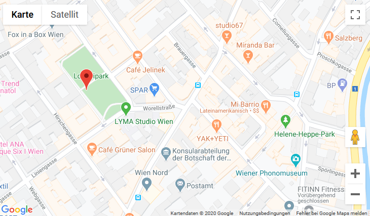

trrrove - find the hidden
trrrove is a Service that let's you find a beacon previously hidden by someone
go to the location shown in the map
Tap connect when you're near the location
Live Output
Uncaught TypeError: Cannot read property 'startNotifications' of null (Your browser may not support this feature.)
> Bluetooth Device reset